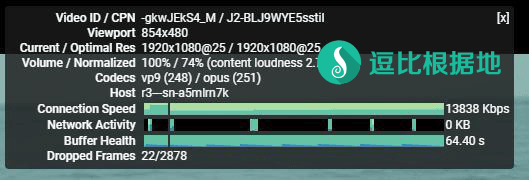
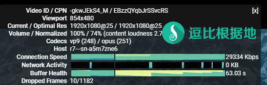

在前段时间开会期间，大量主流代理协议软件被针对、干扰、封IP等，我觉得我或许要把目光放到小众代理软件上，或许有奇效，正好昨天Brook更新了新版本，更新了新协议，我就更新了我以前写的脚本和教程，顺便试一下效果，发现速度很快（至少我这里测试效果速度比SSR快），考虑到我以前写的Brook教程都挤到最前面去了，所以我再简单介绍一下。
Brook简单介绍
Brook 是一个高效的 Socks5 代理软件，官方支持Windows、Linux、MacOS、IOS、Android、树莓派等设备，同时是使用 Golang 语言编写，安装、使用异常简单。
Brook 支持 自主研发 Brook（新版） 协议+Stream Brook（旧版）协议、Shadowsocks 协议、SOCKS5 协议、TCP/UDP 转发、SOCKS5代理转HTTP代理 等功能。
Brook 支持 UDP转发，无需任何设置。
支持单端口和多端口(每个端口可以单独设定密码)，这点类似于 Shadowsocks 和 ShadowsocksR 的单用户服务端。
Github项目：https://github.com/txthinking/brook
如何使用？
服务端 一键脚本
此脚本支持 多端口多密码方式（少量人使用或合租），支持切换新旧混淆协议。
服务端 手动教程
客户端 使用教程
客户端支持PAC（默认支持不需要任何设置，客户端会自动更新最新GFWList PAC）
速度测试
注意：以下测试仅代表我本地的情况，其他地区仅供参考。
环境为：联通运营商，同一个VPS，同一个时间（因为是错开时间测试的，会相差几分钟）
ShadowsocksR 测试
ShadowsocksR配置：aes-128-ctr / auth_aes128_md5 / tls1.2_ticket_auth

Brook 测试
Brook配置：Brook协议（就是新版协议，默认的）

转载请超链接注明：逗比根据地 » 在 主流代理软件 被针对的现在，推荐一个小众好用的代理软件 — Brook
责任声明：本站一切资源仅用作交流学习，请勿用作商业或违法行为！如造成任何后果，本站概不负责！


建议避开 日本 美国等热门地区服务器，有效降低被墙几率。
当然还有一种情况是，IDC 会对服务器做出限制，例如当CPU满载的时候，自动结束非系统程序进程，你的服务器是OpenVZ吗？
如果确定是 Brook 因为速度太快，导致进程占用过多CPU而导致的该问题，那么你去 Telegram群组(TG使用教程)私聊联系我，我教你如何限制Brook的CPU使用率，应该就能解决了。
试过了，可以实现VPN，但是实名制这点，希望能测试后告诉大家，否则也许有的人和服务器就危险了。
这个刚才提交了一次好像没成功，我再试一次
ipapi.com 我访问的话显示的是 GoDaddy 网页（在 GoDaddy 购买域名，但是没有做DNS解析或者没有放网页，就会显示 GoDaddy 的默认页面），fonts.proxy.ustclug.org 是谷歌字体镜像（如下所说，Brook 官方客户端的UI是通过网页实现的）。
使用Brook 官方客户端时，客户端启动后会自建一个HTTP服务，用来网页修改配置（软件UI实际上就是一个网页），同时用来配置在线 PAC。
pac.txtthinking.com 对应的是 Brook 自建的HTTP服务，只有在客户端启动时，pac.txtthinking.com 才能访问，访问的也是本地HTTP服务，和互联网没关系。
提示这个一般情况下都是用国内服务器没有备案而建站才会出现的。